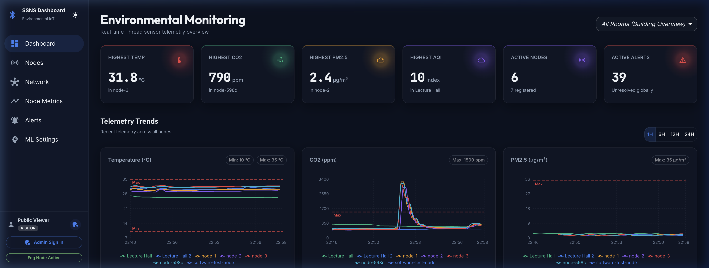
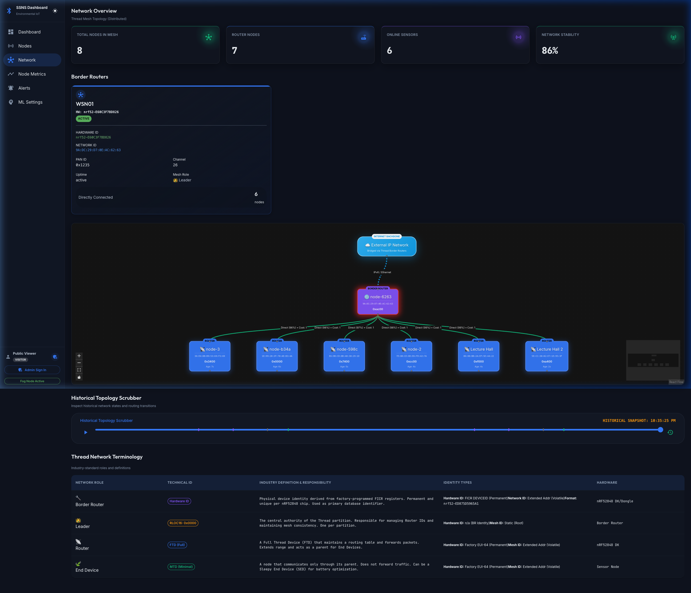
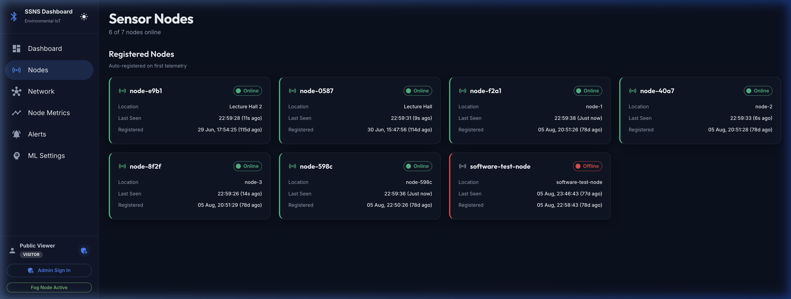
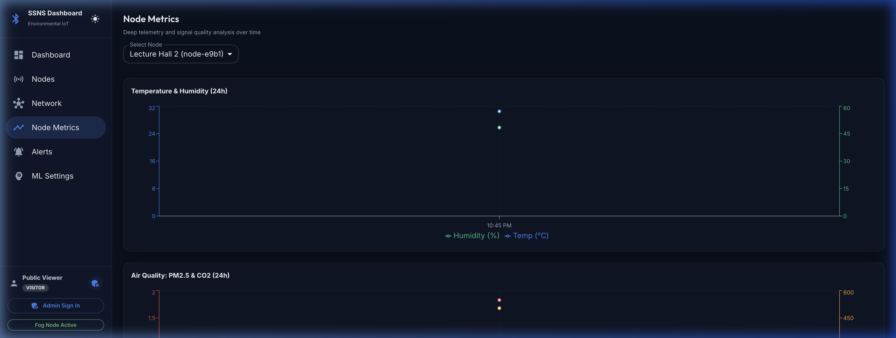
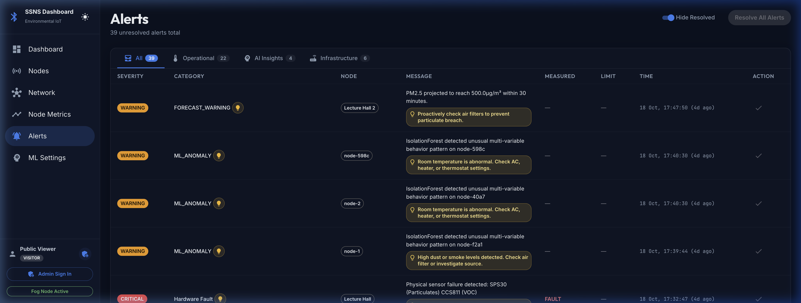
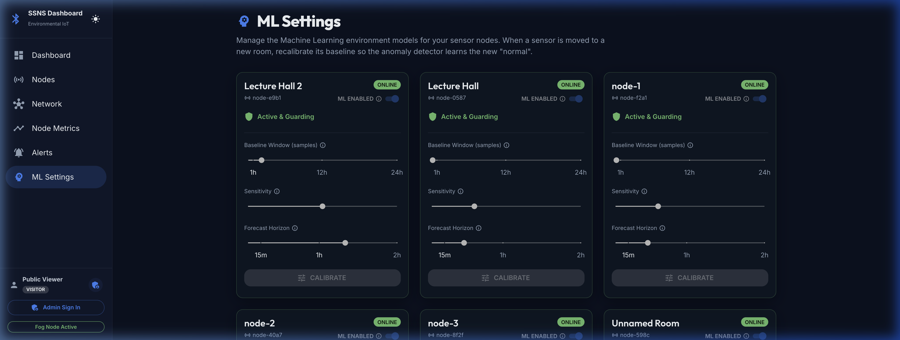

A fault-tolerant, distributed IoT platform engineered for mission-critical indoor air quality (IAQ) and safety monitoring. Combining IPv6 OpenThread mesh resilience, heterogeneous fog gateways, and real-time unsupervised machine learning.

Engineered from bare-metal embedded C firmware to cloud orchestration with zero single points of failure.
Nordic nRF52840 nodes running Zephyr RTOS v3.x. Asynchronously samples I2C sensors with hardware mutexes, computes 27-element statistical vectors, and encodes compact CBOR payloads.
OpenThread Border Router (OTBR) + asynchronous Python gateway. Performs CoAP-to-REST bridging, Redis SETNX deduplication, and exponential backoff store-and-forward queueing during WAN outages.
Dual Spring Boot 3 ingestion replicas horizontally load-balanced behind Caddy reverse proxy. Features parallel multi-engine alert pipelines (OSHA/ASHRAE/WHO) and MongoDB timeseries persistence.
Unsupervised 12-dimensional Isolation Forest anomaly detector in FastAPI. Incorporates two-sample Kolmogorov-Smirnov drift adaptation and real-time Z-score explainable AI attribution.
Explore key subsystems of the production dashboard, mesh visualizer, and temporal state scrubber.
Operations Center Overview: Live multi-room real-time telemetry stream, KPI thresholds, and spatial filtering.

React Flow Mesh Visualizer with Frame-by-Frame Historical Scrubber, differential markers, and Thread role diagnostics.

Hardware Inventory: Live heartbeat status, factory FICR identifiers, and spatial allocations across rooms.

Per-Node Deep Telemetry: Packet throughput, RSSI link budget, battery health, and sensor calibration.

Parallel Rule Engines: Enforcing OSHA, EPA NAAQS, WHO, and ASHRAE environmental bounds with 300s debounce.

Isolation Forest Configuration: Kolmogorov-Smirnov drift thresholding, contamination rate, and live attribution.
Commercial-grade physical sensing transducing complex environmental dimensions.
| Subsystem | Component | Measurement Parameters | Dynamic Range & Accuracy |
|---|---|---|---|
| Compute Unit | Nordic nRF52840 | 64 MHz ARM Cortex-M4F, 1MB Flash, 256KB RAM | IEEE 802.15.4 Radio (-95 dBm sensitivity) |
| CO₂ Sensor | Sensirion SCD41 | Carbon Dioxide concentration | 400 – 5,000 ppm (±50 ppm + 3%) |
| Particulate Counter | Sensirion SPS30 | PM1.0, PM2.5, PM4.0, PM10.0 mass concentration | 0 – 1,000 µg/m³ (Laser Scattering) |
| Air Quality / VOC | ScioSense CCS811 | Total Volatile Organic Compounds (TVOC), eCO₂ | 0 – 1,187 ppb TVOC (Metal-Oxide sensor) |